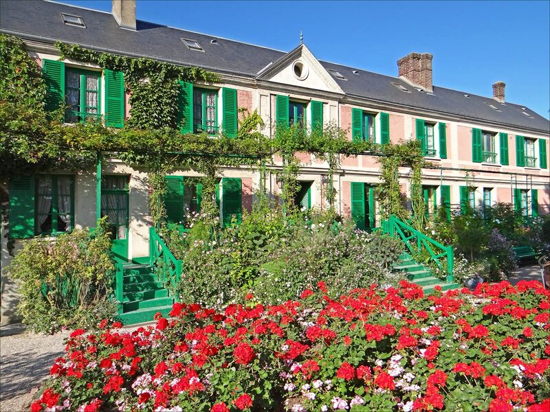
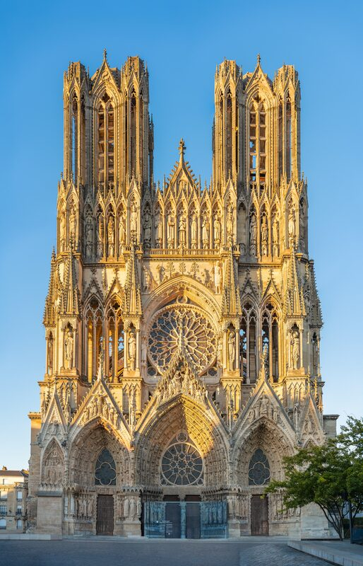
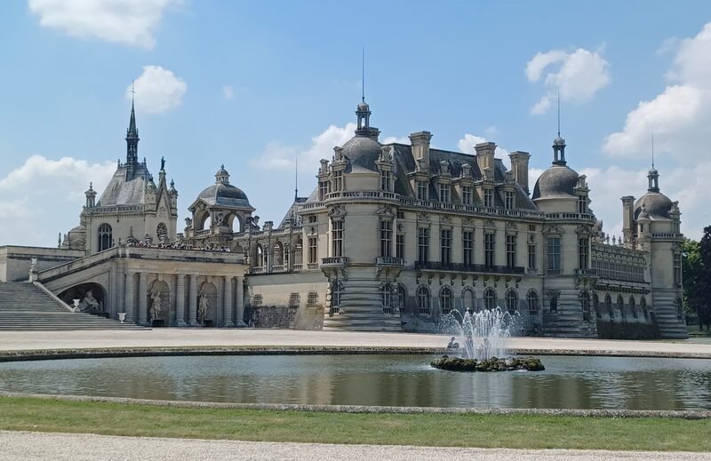
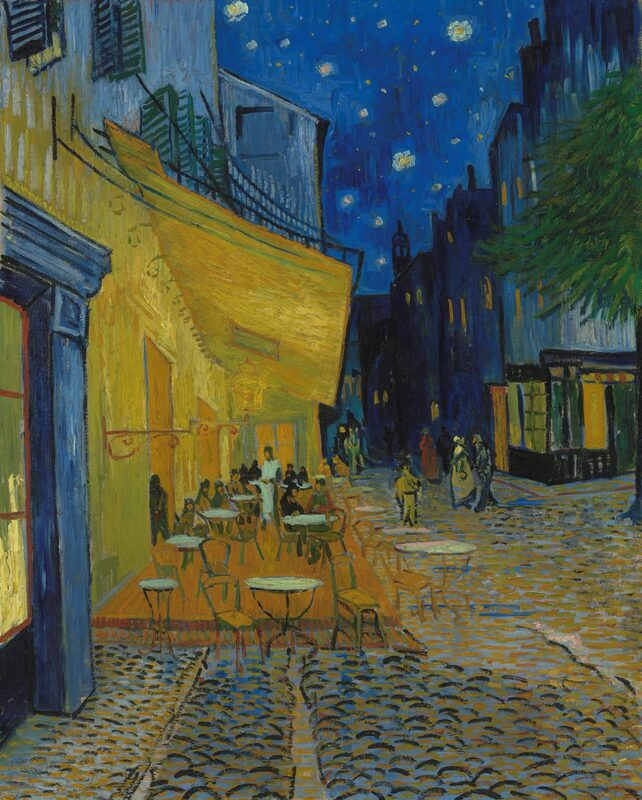

Frenchness 101
For students who have just arrived in France. It gives them the key landmarks they need to navigate French culture, pick up the right reflexes and start using the right tools from day one.
Every format UpTempo builds for study-abroad programs, grouped by category. Workshops, Visits and Full Days each cover a range of specific formats — browse them below, or get in touch to combine a few into a programme built around your group.
Workshops built to give students practical, linguistic and cultural tools they can use throughout their stay.
For students who have just arrived in France. It gives them the key landmarks they need to navigate French culture, pick up the right reflexes and start using the right tools from day one.

Autonomous Language Learning
Methods, resources and habits that let students keep learning French on their own — efficiently and effectively — for the rest of their stay.

Board-game sessions that get participants talking in a relaxed, natural atmosphere. Games lower the barrier to speaking and practising the language without feeling like a traditional class — though every session is carefully prepared, pedagogically and linguistically, in advance.
Any classic visit can be arranged on request — museums, monuments, neighbourhoods, historic sites or a specific theme chosen by the client. Alongside these, several dedicated categories of visits respond to particular situations and needs.

A selection of visits built specifically to work through winter — short days, cold weather, early nightfall or conditions that limit outdoor activity. Each one is designed from the ground up to stay enjoyable, relevant and suited to the season's constraints.

Support for groups attending a specific event in France, such as:
The guide prepares the event in advance so participants can make the most of it, then stays on hand throughout — handling logistics, acting as a point of reference, contributing to the group's safety, and resolving any issues or friction that come up.

Visits and encounters with people who have a trade, a craft or a specific expertise to share — a baker, an artisan, a painter, or anyone able to open up their work to visitors. Every meeting is prepared in advance to brief participants and tailor the experience to the group.
Full-day experiences built to take the time to explore a subject properly — layering different approaches into one deeper experience. Full Days fall into two broad categories.
Full days organised in the city where participants live or are staying — three formats.

A full day exploring one theme, alternating theoretical and participatory talks with outdoor visits and hands-on experiences, punctuated by two tasting moments. Tasting is also where the language flows most easily: describing what you taste is the most natural French exercise there is, and nobody experiences it as one.

An urban hike built around walking and discovery. The day has a light sporting dimension while staying accessible, grounded in gentle physical activity. The route is punctuated with breaks, tastings and visits, and everything along it is narrated and discussed in French — walking stays the thread running through the whole experience.

An intensive day built around deep learning or hands-on project work, usually run in one place with little travel involved. This is where immersion works hardest: the whole point is to pick up a new practice in French — the instructions, the questions, the problem-solving and the talk around the table all happen in the language, so participants are too busy making something to notice they are practising it. They might, for example:
By the end of the day, participants have gained a skill, tried a new practice, or produced something concrete — and have spent hours using French for a real purpose rather than as an exercise.
Full days organised outside the city where participants live or are staying.
The same full-day depth, taken beyond the city — a château, a cathedral or a village reached by coach or train, then explored properly, in French, with the travel time itself put to use. Tell us where your group should go and we build the day around it.



